For this project, we are creating a mutli-scale, sliding window face detector. Following the detection pipeline below:
Example Face Detection of Class 2018
The positive training dataset of 6,713 cropped 36x36 faces are provided from the Caltech Web Faces project. I used SIFT-like Histogram of Gradients(HoG) features to represent faces and non-faces images. To improve the performance, I flipped images left to right and obtained extra positive features from those mirrored face images.
The negative non-faces datasets need to be randomly sampled from training images. At first, I sampled negative data at a single scale, with 10000 samples and 6 pixel cell size. Later, to cover more different negative examples, I extracted the negative samples under different scales at random start, where each image is down scaled by a factor of 0.9. To describe the data in finer details, I also decreased the cell size of HoG feature.
The template coarsely resembles the shape of a human face. As the cell size decreases, we can see better details of a round face, dark eye and eyebrows, and bright spot in the center.
| cell size = 6 | cell size = 4 | cell size = 3 |
| 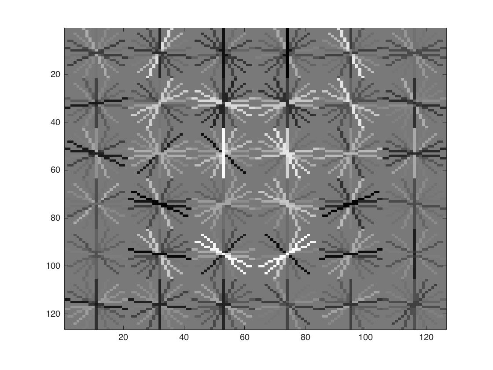 | 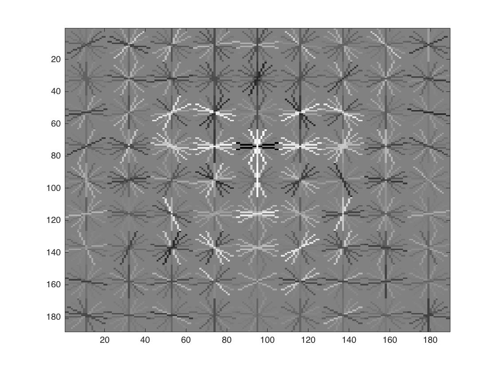 | 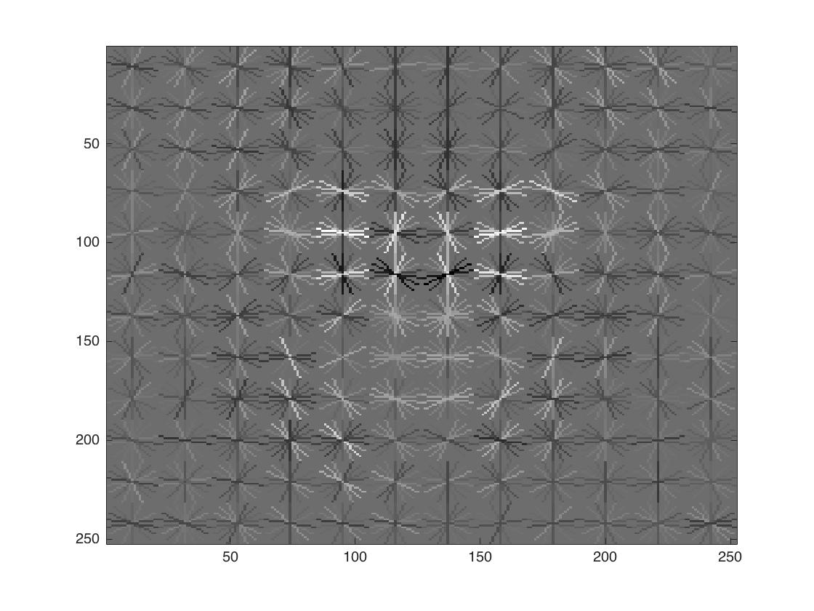 |
This part is pretty straightforward. Classification of the training data uses a linear SVM with lambda = 0.00001. Accuracy of training dataset is 0.999 with true positive rate of 0.573 and true negative rate of 0.427.
I used the sliding window approach to iterate through all possible bounding boxes inside each image. We say it is a face if the confidence of the box is greater than certain threshold. After all face boxes are detected, Non-maxima suppression is run on all the bounding boxes at all scales to filter the most confident boxes and eliminate repetition at similar locations.
First, the single-scale detector performed poorly at only around 42% average precision. Each test image is down scaled by a feactor of 0.9 for every iteration, and larger scale factor leads to better accuracy. Implementing multiple scales greatly improved precision of my detector, boosting the accuracy up to 87%. Finally, I increased the cell size to 3 and I boosted overall accuracy to around 92%. Below are some visualizations of the results.
To improve the SVM classifier, I run the detector again on the non face scenes, and used those false positive examples as new negative training examples to train the SVM classifier. For each non-face scene image, the detected faces with the most confidence are used as hard negative examples. Hard negative mining is more effective for the RBF SVM and this improved performance by about 2%.
After applying hard negative mining, I achieved best performance of average precision 93.7% with cell size of 3, 10000 negative samples and detection at scale factor of 0.9, threshold of 0.6.
| Cell Size | Average Precision | Recall(Viola Jones) | Sample Image |
| cell size = 6 | 87.2% 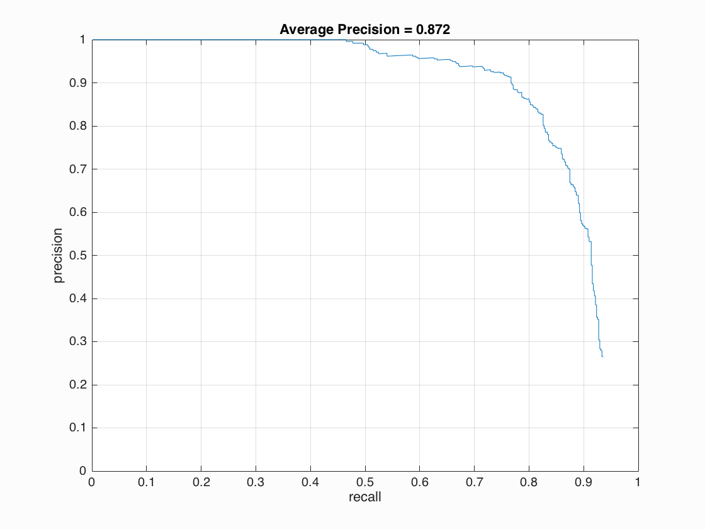 | 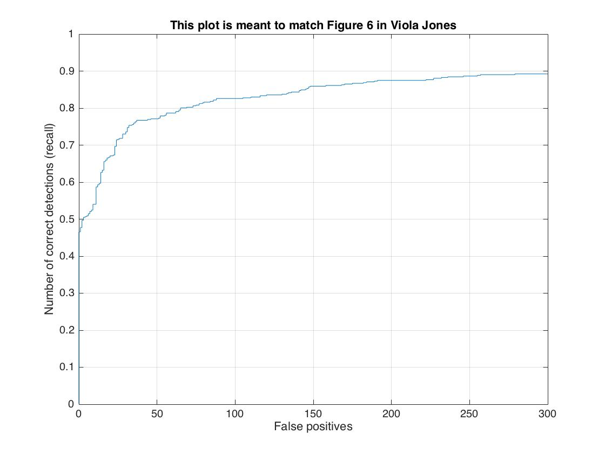 | 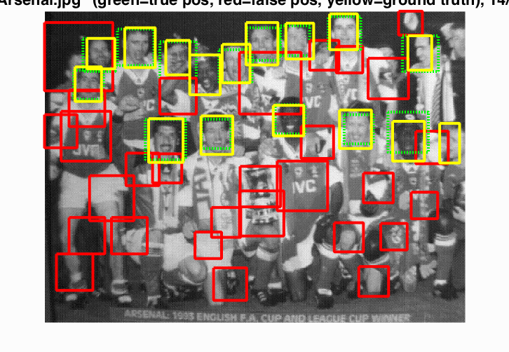 |
| cell size = 4 | 92.6%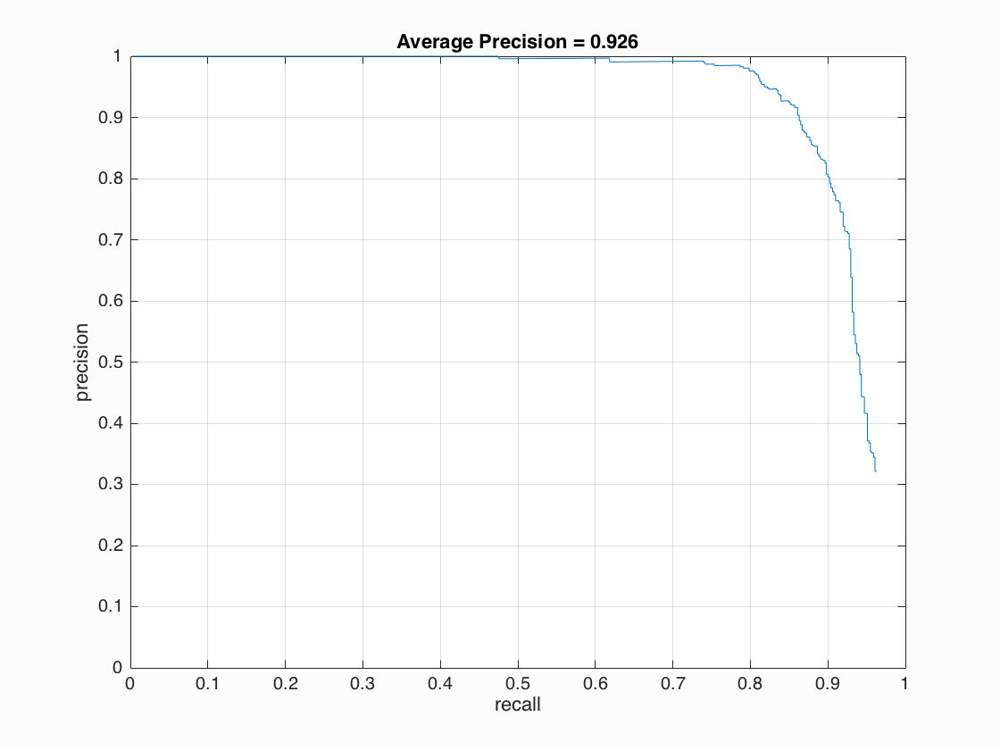 | 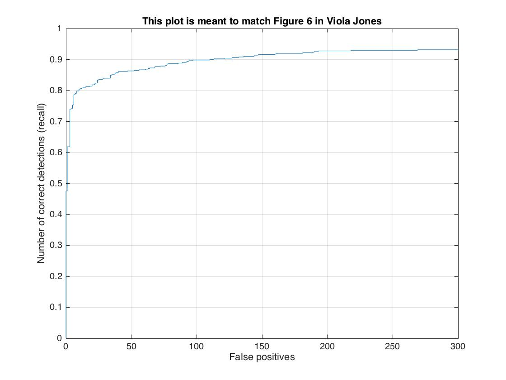 | 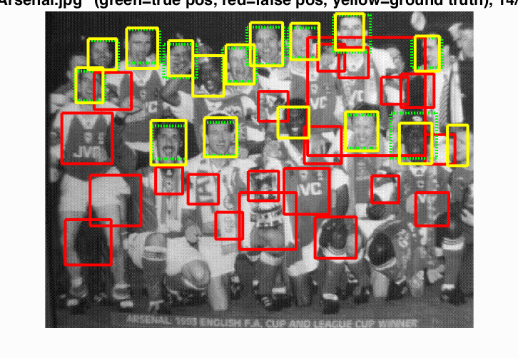 |
| cell size = 3 | 92.8% 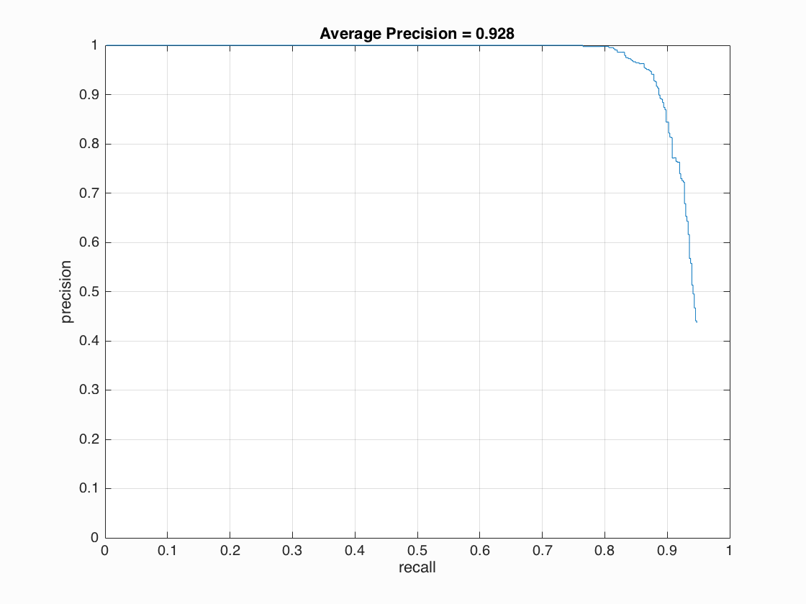 | 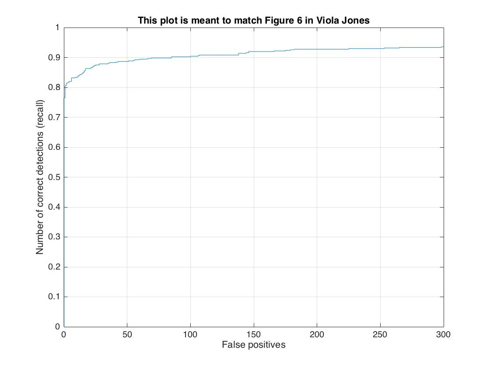 | 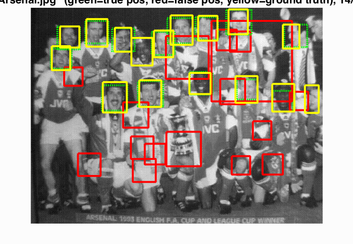 |
| cell size = 3 with Hard Negative Mining | 93.7% 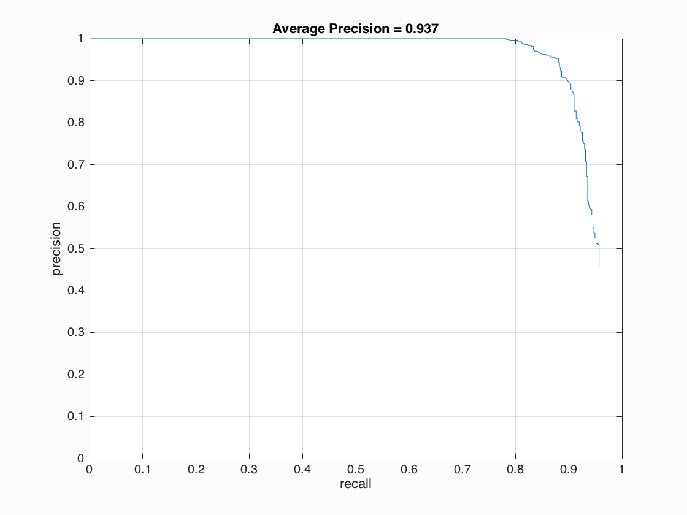 | 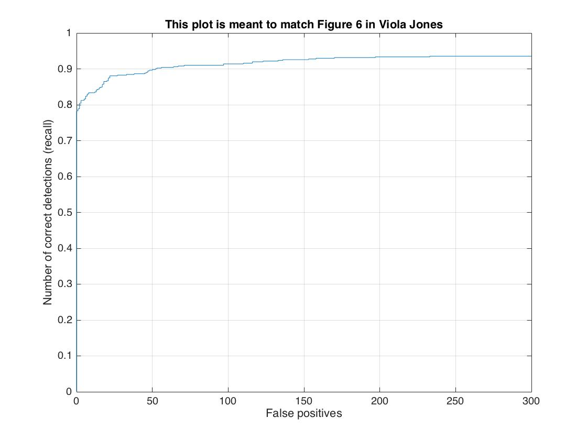 | 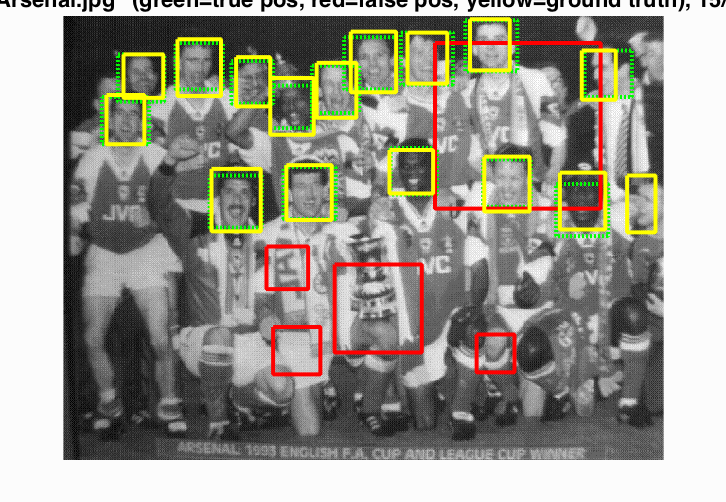 |